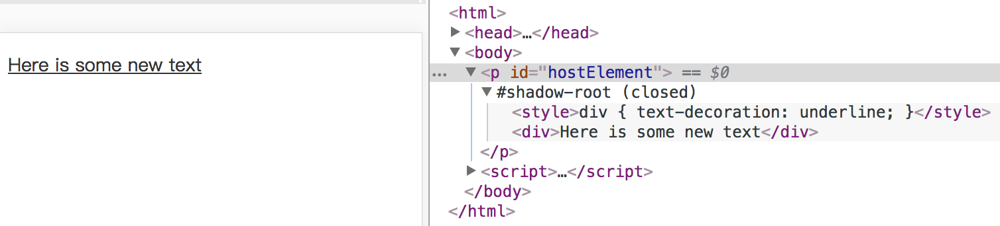
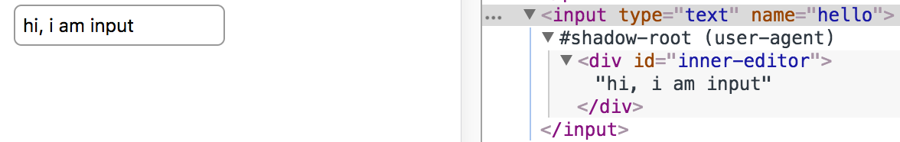

Shadow DOM
基本概念
Shadow DOM 是指，浏览器可以渲染一系列 DOM 元素，而不必把它们插入到主文档的 DOM 树结构中。
基于 Shadow DOM， 可以实现基于组件的应用。它可以为网络开发中的常见问题提供解决方案：
- DOM 隔离：组件的 DOM 是独立的（例如，
document.querySelector()不会返回组件 shadow DOM 中的节点）。这意味着在主文档里，通过querySelectorAll、getElementsByTagName等方法，无法获取到 shadow DOM 内的任何元素。 - 样式隔离：shadow DOM 内部定义的 CSS 在其作用域内。样式规则不会泄漏至组件外，页面样式也不会渗入。
- 组合：为组件设计一个声明性、基于标记的 API。
- 简化 CSS： 作用域 DOM 意味着您可以使用简单的 CSS 选择器，更通用的 id/类名称，而无需担心命名冲突。
- 效率： 将应用看成是多个 DOM 块，而不是一个大的（全局性）页面。
示例
<html>
<head>
<title>Shadow DOM</title>
</head>
<body>
<p id="hostElement"></p>
<input type="text" name="hello">
<script>
// 以 <p> 元素为根，创建 shadow DOM
const p = document.querySelector('#hostElement'); // ①
const shadowRoot = p.attachShadow({mode: 'open'}); // ②
// ③
shadowRoot.innerHTML = `
<style>div { text-decoration: underline; }</style>
<div>Here is some new text</div>
`;
console.log('shadowRoot: ', shadowRoot);
</script>
</body>
</html>
上面的代码里，做了这些事情：
- ① 先获取到主文档里
id为hostElement的<p>元素 - ② 然后调用
attachShadow方法，将其设置为一个影子树的根节点。 - ③ 在这个影子根节点下，插入 HTML 字符串，交给浏览器去生成对应的 DOM 结构。可以看到执行的效果：

可用元素列表
并非所有的 HTML 元素都可以托管影子树，例如常见的表单元素（<input>、<textarea>），实际上浏览器很早就使用它们进行了影子树的托管。

可以看到其节点信息里标注的影子树为 #shadow-root (user-agent)，意为浏览器自己实现的影子树。如果在这些元素上面执行 attachShadow，那么浏览器会提示错误：
document.getElementsByTagName('input')[0].attachShadow({mode: 'open'});
// Failed to execute 'attachShadow' on 'Element': This element does not support attachShadow
此外，让某些元素托管 shadow DOM 毫无意义，例如图片元素 <img>。
<slot> 元素
HTML 的 <slot> 元素是Web Components 技术的重要组成部分。<slot> 是组件内部的占位符，用户可以使用自己的标记来填充它，这样一来，我们可以创建独立的 DOM 树，然后将他们整合到一起。
浏览器支持情况
Shadow DOM v0 版本在 Chrome/Opera 浏览器中得到了支持，其他浏览器厂商则跳过 v0，直接开始实现 v1 版本的 Shadow DOM。
IE 11 及更早的 IE 浏览器均不支持此特性。微软的 Edge 浏览器对 Shadow DOM 的支持还处于考虑阶段。在 [1] 这里可以看到其对于此特性的描述与状态。
Firefox 对此特性的支持正在开发中。
Opera: Support since 40 Safari: partial support, 10.1+
iOS Safari, partial support, 10.2+